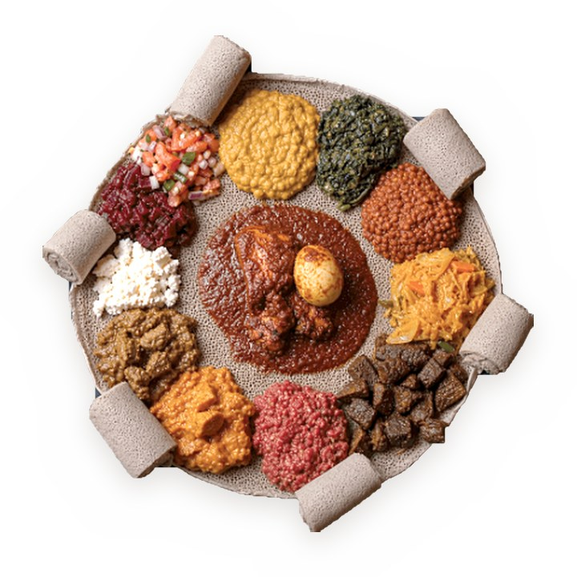
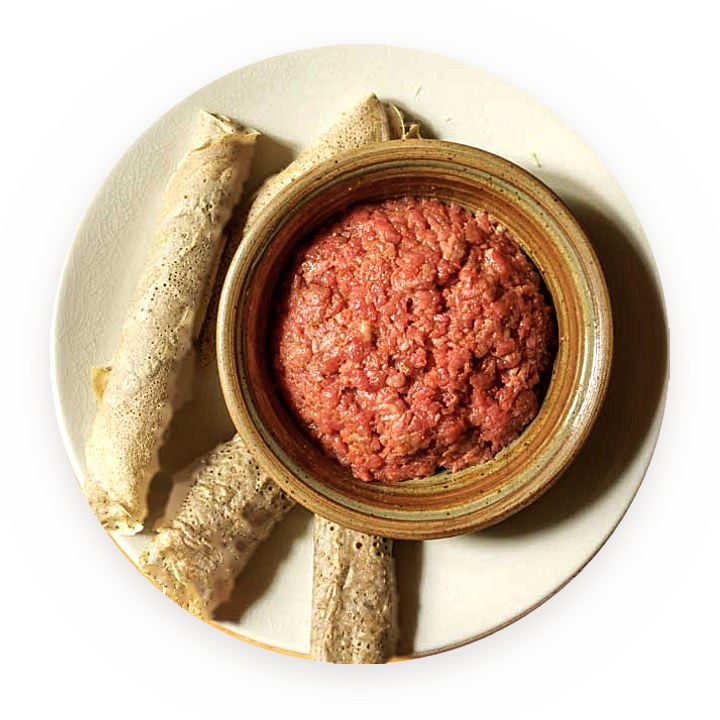
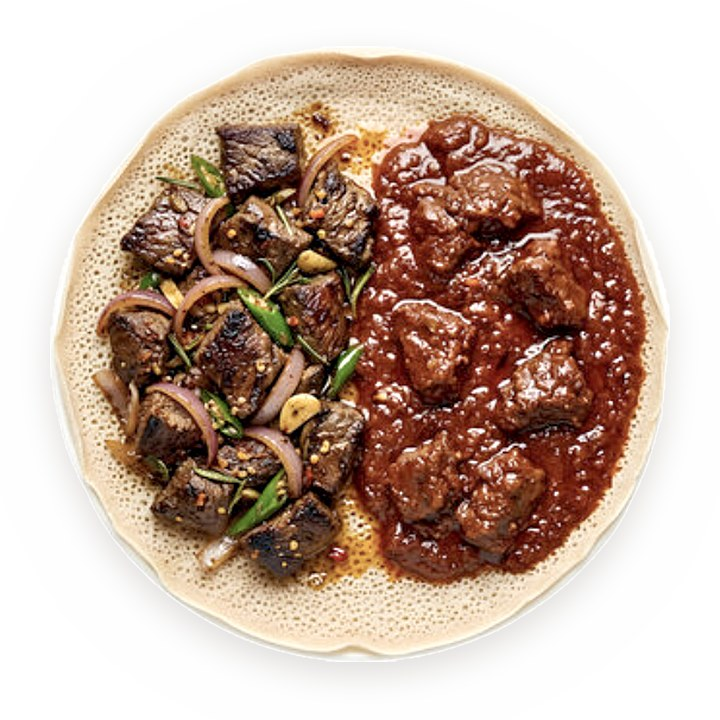
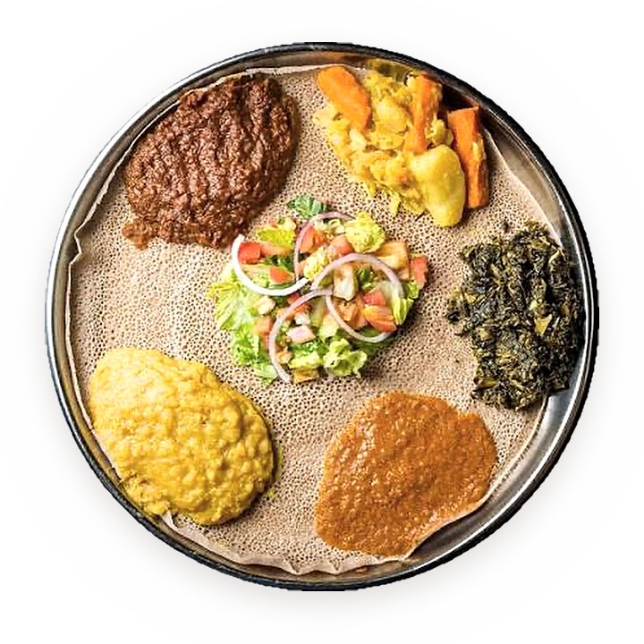

Menu
Traditional Ethiopian dishes, cooked from scratch and served on shared platters with fresh injera.

Doro Wat
Chicken stew, egg, berbere
ChickenSpicy

Kitfo
Minced beef, mitmita, niter kibbeh
BeefSpicy

Tibs
Sautéed beef or lamb
Beef or lambMedium

Shiro Wat
Spiced chickpea stew
VeganMedium
Misir Wat
Red lentils, berbere
VeganSpicy
Gomen
Collard greens
VeganMild
Injera
Teff flatbread
VeganNo heat
Ethiopian Coffee
Buna, traditional roast
Hot drinkNo heat
Dietary and allergy notes
Most of our vegetarian dishes are vegan and suitable for Ethiopian Orthodox fasting days. Meat dishes are often finished with niter kibbeh, a spiced clarified butter. Tell us about any allergies or dietary needs when you request a quote, and we’ll plan the menu around them.